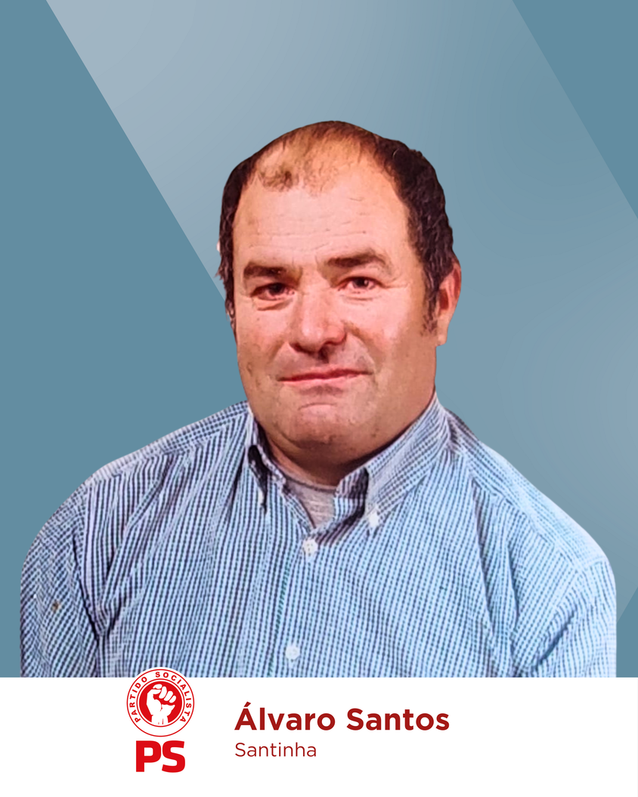

JUNTA DE FREGUESIA DA ERMIDA E FIGUEIREDO
Somos uma EQUIPA UNIDA E PREPARADA para trabalhar em diálogo com todos.
Em articulação com a equipa de Carlos Miranda (Câmara Municipal), pretendemos trabalhar em prole de uma União de Freguesias mais dinâmica e desenvolvida, com novas ideias e soluções.
Somos uma equipa que estará PRESENTE na freguesia, diariamente, em condições de dar uma resposta de proximidade e encontrar soluções para as questões mais prementes.
Para esta equipa, os valores do trabalho, da honestidade e transparência serão a base para a promoção da união, da solidariedade social, do lazer e bem-estar para todos.
Para o êxito de todos, contamos com o Vosso apoio nestas eleições, quer para a União de freguesias de Ermida e Figueiredo, quer para a Assembleia Municipal e Câmara Municipal da Sertã.
JUNTOS, temos Força para Avançar!

Programa
ESTRUTURAS / INFRA-ESTRUTURAS
-
 Verificação, reparação e manutenção de todas as pontes da
freguesia, com o apoio da Câmara Municipal.
Verificação, reparação e manutenção de todas as pontes da
freguesia, com o apoio da Câmara Municipal.
-
Intervir junto da Câmara Municipal para proceder à
alargamento da rede de esgotos na freguesia.
-
Reabilitação de ruas na freguesia e de acordo com
necessidades.
-
Melhoria da “Zona de Lazer do Malhadal”, com o apoio da
Câmara Municipal.
-
Melhoria do “Parque de Merendas” junto do ponto de água
da Santinha.
-
Recuperação de fontanários na freguesia.
-
Intervir junto da Câmara Municipal para a melhoria da
sinalização em toda a freguesia.
-
Colocação de boca de incêndio em diversas lugares da
freguesia.
-
Identificar todas as necessidades de iluminação pública
na freguesia, participando as mesmas à Câmara
Municipal.
PROJETOS – FUNDOS COMUNITÁRIOS
-
Recuperação de moinhos tradicionais.
-
Criação de espaço museológico sobre a temática do
medronho.
FLORESTA E RECURSOS HÍDRICOS
-
Prosseguir com o apoio à AIGP da União de Freguesias e,
em articulação com os parceiros, envidar todos os esforços
para o seu sucesso, com objetivo de promover uma melhor
gestão e valorização do território e reduzir o risco de
incêndios.
-
Fora do quadro da AIGP, se aplicável, dialogar com a
Câmara Municipal para um planeamento adequado de limpeza e
manutenção dos caminhos florestais, recuperação de açudes
e regueiras, e criação de zonas de proteção contra
incêndios florestais.
-
Promover o alargamento do ponto de água da Santinha para
aumentar a capacidade de armazenamento de água e melhorar
as condições no combate a incêndios.
SAÚDE E AÇÃO SOCIAL
-
Intervir junto da Unidade Local de Saúde de Castelo
Branco e da Câmara Municipal para assegurar a continuidade
da Extensão de Saúde.
-
Dar continuidade ao passeio sénior.
-
Reconhecer o mérito da Associação Cultural e Social da
Freguesia do Figueiredo (IPSS) como grande operador de
apoio domiciliário aos nossos idosos e promover junto da
mesma a Elaboração de um Protocolo de colaboração com a
atribuição de um apoio financeiro anual.
APOIO SOCIAL E ATIVIDADES
-
Apoiar as diversas Associações da Freguesia, nas suas
atividades, e descentralizar programas, levando atividades
relacionadas com exposições, artesanato e outros às
diversas aldeias.
-
Apoiar as famílias mais carenciadas, e intervir junto da
Câmara Municipal para obtenção de outros auxílios.
ATIVIDADES CULTURAIS E OUTROS
-
Comemorar o dia da Freguesia.
-
Trazer aos diversos lugares da Freguesia, em articulação
com a Câmara Municipal e Associações Culturais da
freguesia, a música e/ou teatro; fazer exposições de
fotografia, pintura e artesanato.
-
Criação de repositório, em articulação com a Câmara
Municipal, sobre a história da freguesia, festas,
provérbios e acontecimentos locais.
COMUNICAÇÃO E DIVULGAÇÃO
-
Melhorar o acesso aos meios de comunicação, apostando na
comunicação digital.
-
Lutar pela melhoria de transportes públicos em
articulação com a Câmara Municipal.
-
Divulgar melhor aos fregueses toda a atividade da Junta
de forma ativa e com maior transparência às deliberações
tomadas pelos órgãos autárquicos.